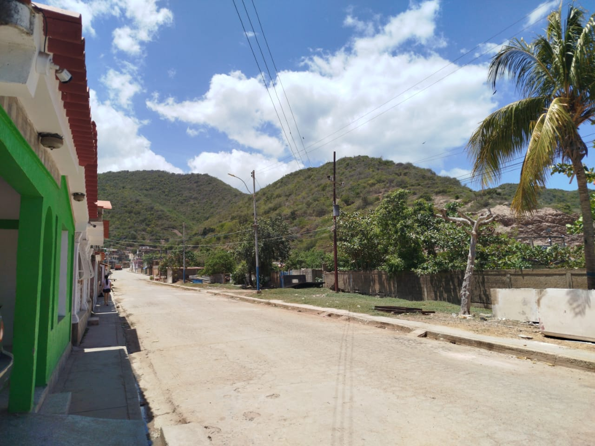
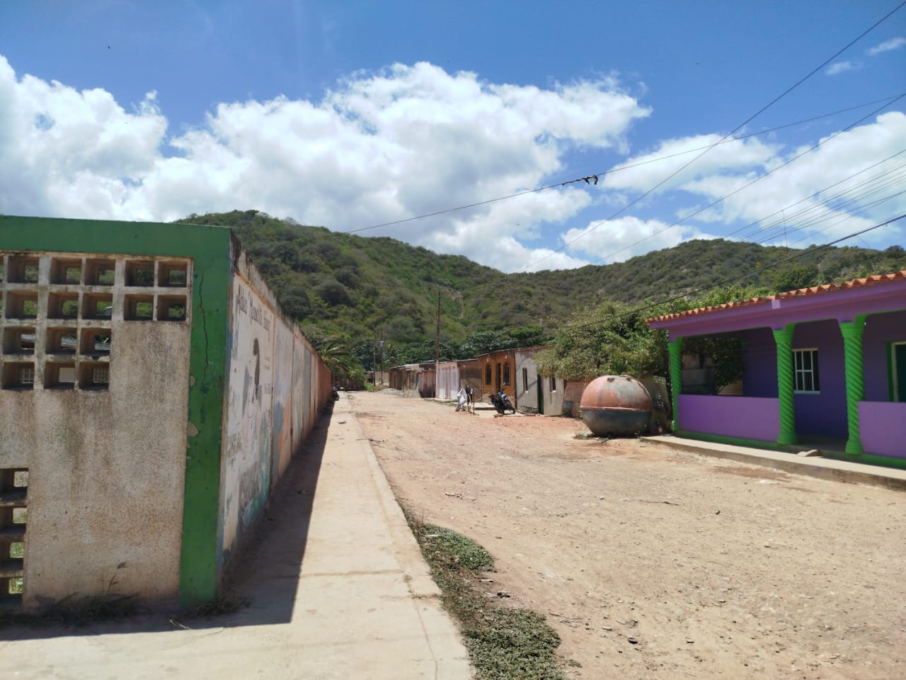
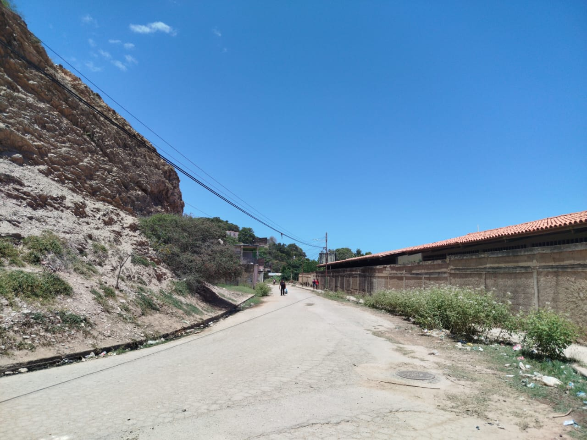
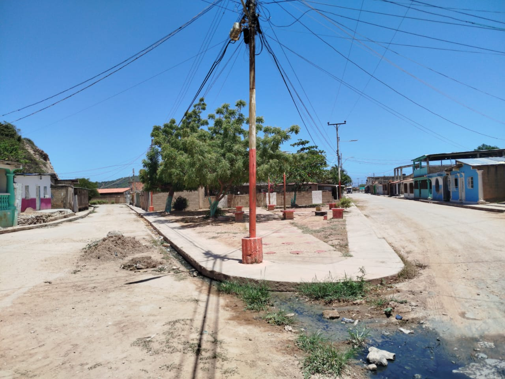

El sector 8 de Febrero constituye el núcleo educativo y logístico de mayor elevación en la parroquia El Morro de Puerto Santo. Su configuración urbana se desarrolla a lo largo de una vía principal que asciende de forma pronunciada, alcanzando una gran altitud y conectando los ejes de Las Colinas, La Terraza, Principal Abajo, Principal Arriba, La Laguna, Zona Nueva e Isidro Gil. Este sector alberga la sede del Liceo local, factor que dinamiza el flujo peatonal y estudiantil en la zona. Un elemento distintivo de su diseño es una plaza de configuración triangular que funciona como nodo articulador entre las dos vías de acceso situadas a los laterales de la institución educativa, optimizando la circulación en este punto estratégico. Por su función institucional y su ubicación geográfica, el sector 8 de Febrero es una referencia esencial para la vida comunitaria Morrera.



